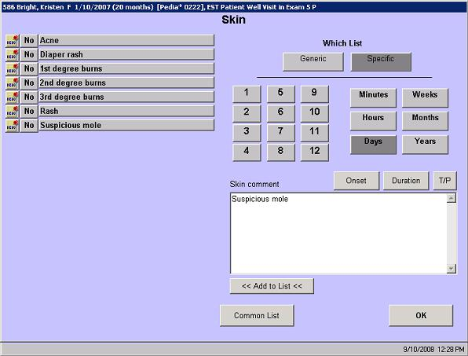

In this solution...
- Description
- Want to Learn More?
- Related Solutions
- Related Education Opportunities
Description
The intended use for the Generic and Specific lists is to give users a way to separate pick list items. The generic list will remain the same for all observations within a Composite (multi-level) observation while the specific list will appear only for that specific observation in that specific context. For example, the ROS in a Yes/No format has a button for Comment for each body system. The Generic pick list for all of the comment screens will be the same within that ROS, but the specific list will be different for Constitution, Eye, Respiratory, etc.
There are a few screens in EncounterPRO that give you the option of creating a generic and specific list, in addition to the typical Common or Personal lists. The most common one is the Chief Complaint screen, but Generic and Specific buttons appear on any screen that has a Pick List (Freeform History screens).

|